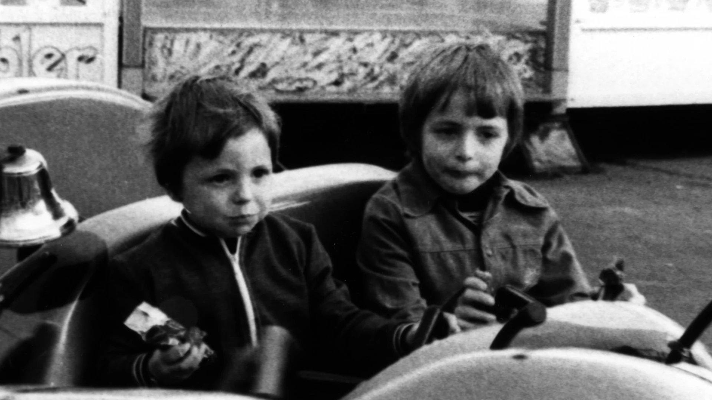
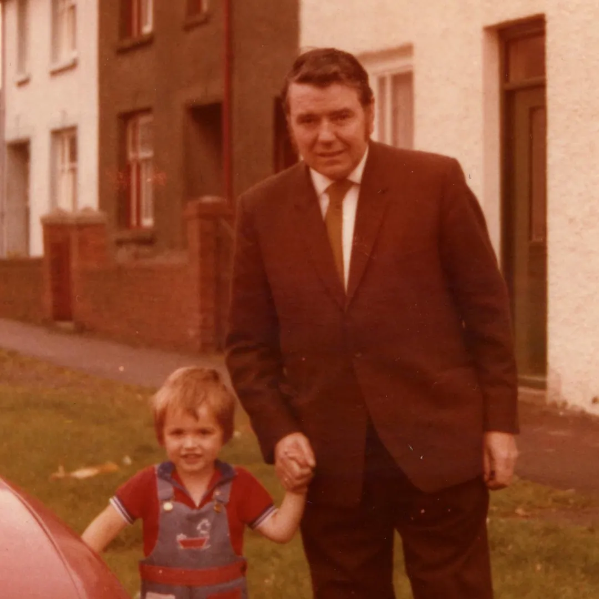
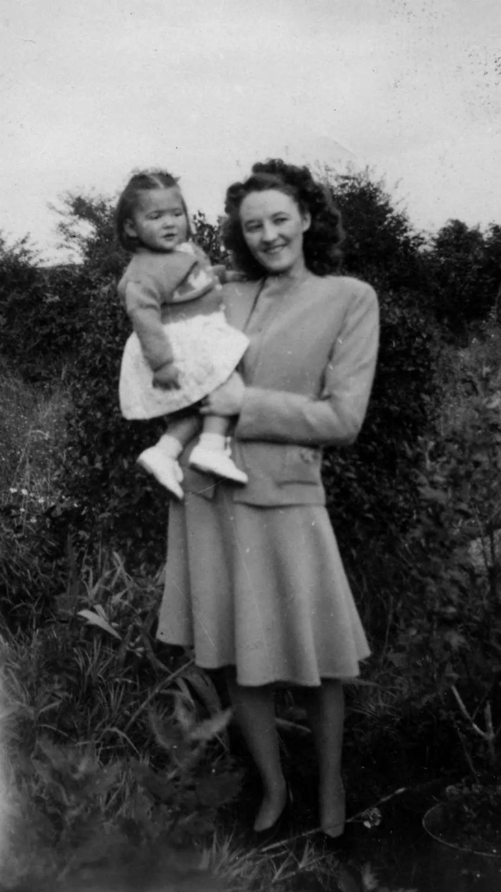

Zoom and enhance!
With modern off-the-shelf AI tools it's now possible to bring old or degraded photos back to life by adding (or correcting) colour, and enhancing faces.
· 4 mins · Mark Evans
Background
"Zoom and enhance!" is a movie trope that has long infuriated anyone who has even the most basic understanding of what is (and isn't) possible when manipulating images. In the past I often found myself shouting “You can't recover information that was never there!” at the TV. Well, it turns out that for movies and TV shows based before 2022 my rants were justified, but, for those based during or after 2022, it's starting to look like I was very wrong.
The restoration tools
- For the face enhancement I’ve been using the Baseten application that uses the GFP-GAN algorithm.
- For the colourisation I’ve been using the Palette online app.
Examples
Below are 3 examples using my own family photographs that date between 1949 and 1979. Figures 1 & 3 were originally black & white. While Figure 2 was originally colour, but the colour has degraded considerably and now has a very strong red colour cast. Each photo was digitised by scanning the original print (not the negative).
Click or tap the image to toggle between original and restored images
Click or tap the image to toggle between original and restored images
Click or tap the image to toggle between original and restored images

Are the results “real”?
The results in the examples above look amazing, but, are they real? i.e. are they an accurate representation of the original photos’ subjects? We can't know for sure, as when restoring old photos the only source of truth we have are the old photos themselves. But, what if we used a modern photo, removed the colour, and added a blur to the image in an attempt to make it look old? How closely would the results of face enhancement and colour restoration match the original image?
For this experiment I used an image of the wife and me that was taken a couple of weeks ago. I then desaturated the image and applied a 2 px blur to remove enough of the details such that it started to look like the old photos in the examples above (actually, I think it looks worse).
The original image is shown in Figure 4 below. The degraded image is shown in Figure 5, you can click or tap on Figure 5 to see the result of the restoration.
Click or tap the image to toggle between original and restored images
Paragraph
Second section
Paragraph
Feedback
If you have any comments on this article then please get in touch via Twitter (@dbs_sticky).